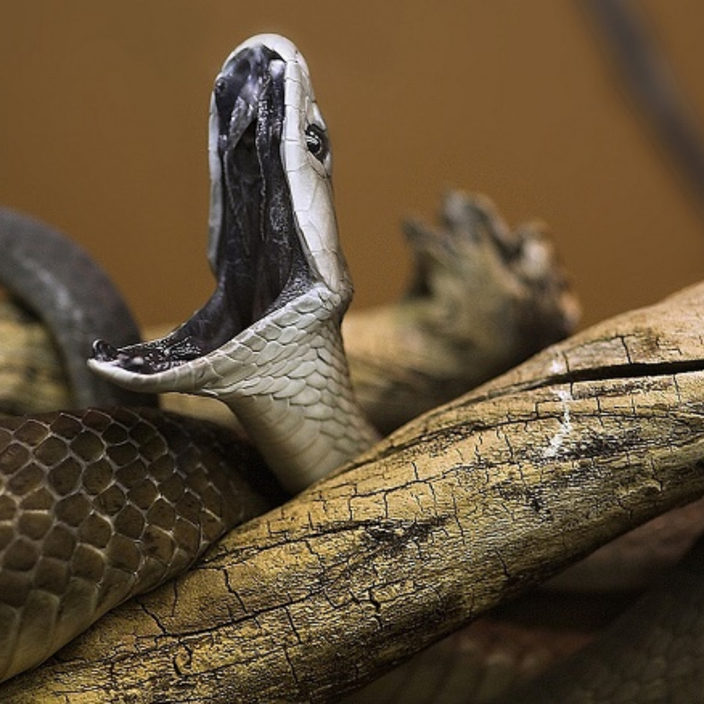

A dobogó legfelső fokán pedig egy apró, de annál kellemetlenebb és halálosabb élőlény szerepel, ami nem más, mint a szúnyog. A WHO statisztikái szerint ezek a zümmögő jószágok évente 1 000 000 halálesetért felelősek, legfőképpen a maláriát, a nyugat-nílusi vírust, és a dengue-lázt terjesztve. Mondanánk, hogy az elsőség okán nagy tapsot kérünk a tömeggyilkos rovaroknak, de inkább nem.
2. Jegesmedve
Halálok évente: ???
A jegesmedve szinte állandóan vándorúton van, s emiatt még saját territóriumot sem tart. Ezen nem is csodálkozhatunk, hiszen a jégmezők nemigen szolgálnak bőséges táplálékkal, és viszonylag nagy utat kell megtenniük az állatoknak ahhoz, hogy napi táplálékukat beszerezzék. Zsákmány után kutatva akár napi 70 km-es távolságot is megtesznek. Míg sok más medvefaj étrendjén igen jelentős a növényi eredetű táplálékok szerepe, a jegesmedve csak a sarki nyár hónapjaiban fogyaszt egy kevés zuzmót, mohát vagy bogyót, de azt is csupán étrendi kiegészítésként. Táplálékának zöme állati eredetű, s mivel a sarkvidék zord körülményei közt nemigen válogathat, szinte mindent megeszik.
3. Cecelégy
Halálok évente: 1000000
Bár önmagukban sem épp kellemes élőlények, ők sem saját maguktól felelősek annyi emberhalálért. Őket ugyanis az álomkór betegségét okozó parazita használja helyijáratként, ráadásul a betegség akár évekig is tünetmentes lehet. Szintén 10 000 ember vesztét okozzák.
4. Elefánt
Halálok évente: 500
Az ormányosok nem játékszerek, és csak addig tartják tiszteletben az embert, amíg az ember is tiszteletben tartja az élőhelyüket. Évente nagyjából 500-an látnak életük utolsó pillanataiban feléjük robogó elefántot. Egyébként most járunk ott, hogy a cápánál százszor halálosabb élőlényről beszélünk, és mégis Cápa filmből van csilliárd, míg “A halálos Jumbó” címmel még senki nem csinált thrillert.
5. Viziló
Halálok évente: 500
Ezek az elsőre kedvesnek tűnő jószágok közvetlenül versenyeznek az elefántokkal, tehát szintén 500 ember végét okozzák évente, ami annak is köszönhető, hogy bár a legtöbb rajzfilm szerint békés és vicces jószágok, valójában az egyik legagresszívebb fajról beszélünk, amennyiben a területéről van szó.

6. Fekete mamba
Halálok évente: 50.000
Nem csak Indiana Jones fél a kígyóktól, ráadásul valamelyest okkal is, mert bár annak az esélye, hogy például Magyarországon bárkivel is kígyómarás végezzen, a nullához közelít, ennek ellenére ezek az állatok évente ötvenezer felebarátunkkal végeznek szerte a világon.
7. Kúpos csiga
Halálok évente: 10.000
Nos, ezt se sokan gondolnák előre, ugye? Mondjuk a folyamatot. Az emberből ürülő petékből édesvízben kelnek ki a miracídium lárvák, melyek köztes gazdának alkalmas csigát keresnek, abba befúrják magukat, és ott ivartalanul szaporodnak. A csigákból távozó cerkária lárvák aztán vízben úszva keresnek alkalmas végleges gazdát. A bőrön keresztül hatolnak be az emberbe, majd ott a véredényrendszerben fejlődve alakulnak kifejlett állatokká. Így aztán a kedves puhatestűek akaratlanul bár, de nem kevesebb, mint 10 000 emberrel végeznek évente.
8. Nyílméreg béka
Halálok évente: ???
A Kolumbia esőerdeiben őshonos, 5 centiméteresre megnövő arany nyílméregbéka (Phyllobates terribilis) már feltűnő világossárga színével is a benne rejlő veszélyre hívja föl potenciális ragadozói figyelmét, így próbálva elkerülni, hogy áldozatukul essen. A legmérgezőbb gerinces a világon. Mérge egy neurotoxin, mely az idegrendszerre van hatással. Meggátolja, hogy az idegsejtek ingerületet adjanak át egymásnak, az izmok emiatt bénult, összehúzódott állapotban maradnak.
9. Bordás krokodil
Halálok évente: 1.000
1000 halandót küldenek a túlvilágra, ami nagyon sok, de mivel általában távolabbi, és szegényebb lakossággal rendelkező térségeken gyakoriak a halálesetek, így nem kapnak akkora nyilvánosságot, mint egyéb sajnálatos események.
10. Kékgyűrűs polip
Halálok évente: ???
Ausztrália part menti vizeinek egy másik halálos állata a kékgyűrűs polip (Hapalochlaena-fajok). Nevét onnan kapta, hogy amikor megzavarják, az egyébként világos színű állat bőre besötétedik, és karjain élénk kék színű gyűrűk jelennek meg. Mérge igen erős, egyetlen állat annyi mérget termel, amely elég huszonhat felnőtt ember megölésére. Bár maga a csípés fájdalommentes, a mérgezés tünetei azonnal jelentkeznek.